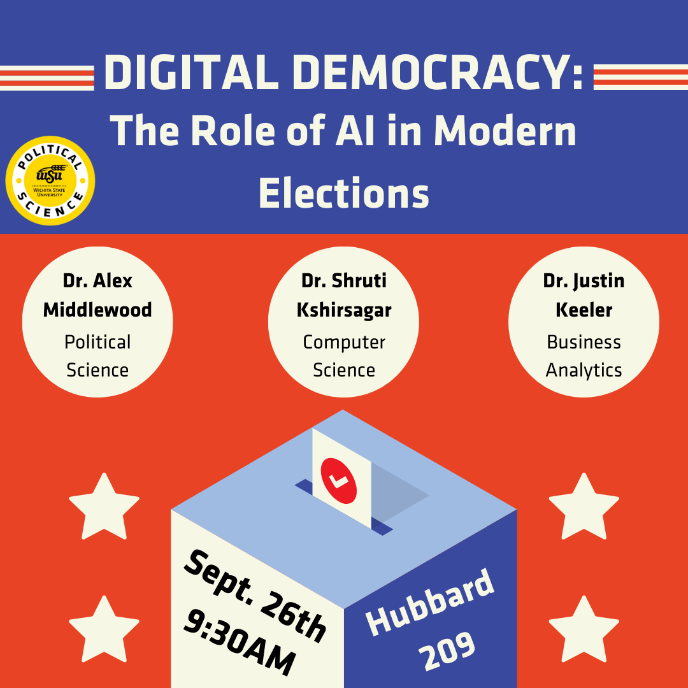

lthcare and
Projects - Soundmind Neurovision Innovation Lab
Lab Activities
Lab Activities

AI and Elections Panel
Hosted an engaging workshop introducing AI fundamentals and ethics to high school students, including hands-on activities.
SoundMind research group members won the 2nd and 3rd place at WSU's Research Day.
Elmira Salari presented her research on LLMs for Healthcare, and
Mark Angelo Ronald showcased her work on Deepfakes. Great work!